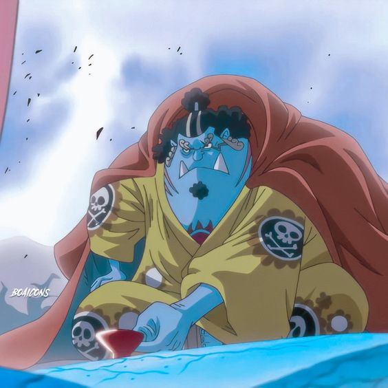

Bando dos Chapéus de palha:
Monkey D. Luffy
Ele é o protagonista, capitão do Bando dos Chapéus de Palha(em japonês, "Mugiwara")e seu sonho é se tornar o rei dos piratas.Ama comer e tem dois irmãos, Sabo e Ace. Recebeu seu chapéu de palha ainda quando era criança por Shanks, um pirata. Ele disse para o ruivo que iria se tornar o rei dos piratas e tem treinado desde então.Comeu a Gomu Gomu no Mi, uma akuma no mi com o poder da borracha (akuma no mi é uma fruta extremamente rara que concede poderes incríveis para o usuário, mas você perde a capacidade de nadar), então se transformou em um homem borracha.Quando iniciou sua jornada, todos tiravam sarro dele. Atualmente, é um dos piratas mais procurados do mundo e temido por todos(é conhecido como o "Chapéu de Palha"). No Time Skip, treinou com Rayleigh, vice-capitão do bando de Gol D. Roger, o antigo rei dos piratas.

Roronoa Zoro
Ele foi o primeiro a entrar para a tripulação (atrás somente de Luffy, o capitão). Ele é um espadachim de Santoryu para manejar suas espadas. Isso significa que ele usa três espadas para lutar (uma em cada mão e outra na boca). Seu sonho é se tornar o melhor espadachim do mundo por conta de uma promessa com a sua amiga de infância, Kuina. Um pouco depois de conhecer Luffy, duelou contra Dracule Mihawk, o melhor espadachim do mundo e perdeu miseravelmente (foi essa batalha que levou sua imensa cicatriz no peito) e depois disso, jurou nunca mais perder. Agora, ele luta até a morte em suas batalhas. Ou ele vence, ou prefere morrer. É extremamente leal ao seu bando e escolheria morrer no lugar de seu capitão. De acordo com ele, não poderia ser o melhor espadachim do mundo se não consegue nem mesmo proteger seu bando. No Time Skip, treinou com o próprio Mihawk (uma cena incrível foi que para ficar mais forte para proteger sua tripulação, se ajoelhou em frente ao seu rival e pediu para que ele o treinasse).
Usopp
Usopp foi o segundo a entrar para o bando. Ele tem a fama de mentiroso, pois em sua terra natal, sempre contava histórias falsas para sua amiga Kaya(ainda acho que os dois vão se casar no final) e para o povo do vilarejo. Ele atira um estilingue e sua mira é perfeita. Também é criativo para inventar instrumentos diferentes e táticas inteligentes contra os inimigos. Ele é tão bom inventando, que construiu até o "Clima Tact"(um bastão separado em três partes e que consegue controlar o clima ao seu redor) para a Nami e o objeto se tornou a arma principal da navegadora(também conhecido como "God Usopp"). No Time Skip, treinou no Arquipélogo Boin, um lugar selvagem em que as comidas e animais são gigantes.
Vinsmoke Sanji
Sanji foi o quarto membro da tripulação e é o cozinheiro do bando. Trabalhava em um restaurante flutuante chamado "Baratie". Luffy o encontrou quando foram comer e depois de muita confusão, Sanji aceita entrar para os Mugiwaras. É totalmente apaixonado por TODAS as mulheres do mundo inteiro ( ele é o que chamamos de gado supremo). Seu sonho é encontrar o lendário All Blue (um mar que contém os peixes dos quatro oceanos). Ele luta com as pernas para não danificar as mãos, já que é um cozinheiro. Sanji não deixa desperdiçarem nem um grão de arroz e alimenta a todos que tem fome, idependente de quem sejam. Junto com Luffy, Zoro e Jinbe, é um dos mais fortes. No Time Skip, treinou com Ivan e os okamas. (é conhecido como "Perna Negra").
Nami
Nami aparece desde o primeiro episódio e é a terceira a se juntar ao bando, mas somente entra oficialmente um tempo depois. Ela é obcecada por dinheiro e faria praticamente qualquer coisa tendo dinheiro envolvido. Essa obecessão se dá ao fato de que quando era pequena, sua mãe foi morta pelo pirata tritão Arlong, pois não tinha dinheiro para pagar por sua vida. Desde então, trabalha para o bando tritão como cartógrafa, com o intuito de juntar ฿100.000.000 (cem milhões de berries) e comprar sua vila de Arlong, que estavam em uma vida escravagista. Quando Luffy derrota Arlong e liberta sua vila, Nami resolve se juntar oficialmente ao bando e virou a navegadora dos Mugiwaras. Seu sonho é desenhar um mapa do mundo inteiro e no Time Skip, treinou em uma ilha no céu, com o objetivo de ser uma navegadora tão boa que possa levar seu capitão para qualquer lugar que ele quiser (conhecida como "Gata Ladra").
Tony Tony Chopper
Chopper originalmente era uma rena que acabou comendo uma akuma no mi com o poder de humano, então ele consegue transformar o próprio corpo, pensar como um humano e até mesmo falar. Foi criado pelo doutor Hiluluk e depois de morrer, passou a ser o aprendiz de medicina de Doctorine. Seu sonho é curar todas as doenças do mundo. No Time Skip, melhorou seus conhecimentos médicos no Reino Torino e avançou suas transformações com a Rumblle Ball(uma pilula que muda a sua forma).
Nico Robin
Robin é a arqueóloga do bando. Ela originalmente era inimiga dos Mugiwaras, mas após seu líder ser derrotado por Luffy, decide se juntar ao bando. Ela nasceu em Ohara, uma ilha de arqueólogos que conseguiam ler os Poneglyphs, que são blocos de pedras enormes com escritas em uma linguagem antiga e espalhados pelo mundo. Contém segredos que o Governo Mundial tenta esconder de todo jeito. Existem três tipos de Poneglyphs. Alguns contam a história do século perdido (cem anos na história em que foram totalmente esquecidos, ninguém sabe o que ocorreu durante esse período), outros possuem informações sobre armas milenais, pistas para encontrar outros Poneglyphs e o caminho para chegar até a última ilha da Grand Line, Raftel. Toda a sua ilha foi morta pelo Governo Mundial e ela é a única no mundo que pode ler essas pedras, então com apenas 8 anos foi imposta uma recompensa pela sua cabeça e passou a vida sendo uma fugitiva, trabalhando para criminosos até se juntar aos Mugiwaras. Seu sonho é encontrar o Rio Poneglyph (todas as mensagens passadas por todos os Poneglyphs). É usuária de akuma no mi, que permite ao usuário replicar e brotar pedaços de seu corpo a partir da superfície de qualquer objeto ou coisa viva. Treinou com os revolucionários durante o Time Skip.
Franky
Franky é um ciborgue e carpinteiro do bando e um ciborgue. Seu mentor foi o carpinteiro de Gol D. Roger, mas após sua morte, nunca mais construiu um navio. Não até encontrar os Mugiwaras. Seu sonho é ver o Luffy se tornar o rei dos piratas com o navio que ele construiu (o Thousand Sunny). No início, se recusou a entrar no bando, mas o bando usou diversos meios para faze-lo concordar. No Time Skip, treinou no laborário do gênio Vegapunk.
Brook
Brook é o músico dos Mugiwaras. Ele já era um pirata antes de se juntar ao bando, mas sua tripulação foi morta por inimigos. Sua akuma no mi permitiu sua alma voltar para o corpo depois de morrer, o que o torna praticamente um imortal, mas seu corpo foi perdido e quando o reencontrou, era somente ossos. Seu sonho é encontrar a Laboon, uma baleia gigantesca que era parte de seu antigo bando e espera até hoje por todos. No Time Skip, se tornou um cantor famoso e foi treinando enquanto isso.

Jinbe
Jinbe é o mais recente integrante do bando. Ele é um tritão e já foi parte dos Shichibukais (um grupo de 7 piratas protegidos pelo governo, mas essa posição foi abolida nos últimos episódios). Conheceu Luffy antes mesmo do Time Skip, mas somente foi se juntar ao bando 400 episódios depois.